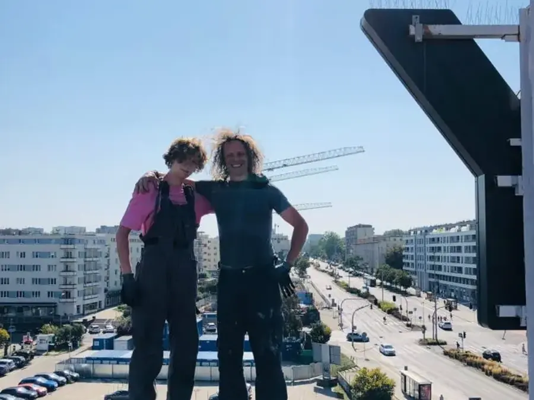

Jak wybrać firmę alpinistyczną?
Przed zleceniem prac na wysokości sprawdź siedem rzeczy: certyfikaty dostępu linowego (IRATA lub SPRAT), polisę OC, badania i szkolenia pracowników, pisemną wycenę z zakresem prac, sposób zabezpieczenia strefy pod budynkiem, protokół ze zdjęciami oraz opinie innych zarządców. Dzięki temu unikniesz fuszerki i odpowiedzialności za wypadek.
1. Certyfikaty dostępu linowego
Zapytaj o certyfikaty IRATA lub SPRAT. To międzynarodowe systemy szkolenia techników dostępu linowego z trzema poziomami. Na każdej pracy powinien być technik najwyższego poziomu, który odpowiada za bezpieczeństwo zespołu. Certyfikat ma numer, który można sprawdzić w bazie organizacji.
2. Polisa OC
Poproś o potwierdzenie ubezpieczenia odpowiedzialności cywilnej. Jeśli podczas prac spadnie narzędzie na samochód albo zostanie uszkodzona elewacja, szkodę pokrywa polisa wykonawcy, a nie wspólnota.
3. Badania i szkolenia pracowników
Osoby pracujące na wysokości muszą mieć aktualne badania lekarskie dopuszczające do takiej pracy i szkolenie BHP. Rzetelna firma nie ma problemu, żeby to potwierdzić.
4. Pisemna wycena z zakresem prac
Wycena powinna opisywać, co dokładnie zostanie zrobione, jakimi materiałami i w jakim terminie. Unikaj ofert typu „naprawa dachu – ryczałt”, bo potem trudno rozliczyć, co zostało wykonane.
5. Zabezpieczenie strefy pod budynkiem
Zapytaj, jak wykonawca wygrodzi chodnik, wejście lub parking. Przy pracach nad ciągiem pieszym potrzebne jest oznakowanie, a czasem obserwator na dole.
6. Protokół ze zdjęciami przed i po
Dla zarządcy to podstawa rozliczenia ze wspólnotą lub właścicielem. Zdjęcia pokazują stan przed pracami, zakres wykonanych napraw i efekt. Przydają się też przy przeglądzie budynku i przy zgłoszeniu szkody do ubezpieczyciela.
7. Opinie i realizacje
Sprawdź opinie w Google i zdjęcia prawdziwych realizacji, najlepiej z Twojej okolicy. Zdjęcia ze stocka nic nie mówią o jakości pracy.

Wybierasz firmę w Trójmieście?
Zwróć uwagę, skąd dojeżdża ekipa. Firma z bazą na miejscu szybciej reaguje na przeciek czy sople i zna typowe problemy lokalnej zabudowy: kamienic w Gdańsku i Sopocie, modernizmu i biurowców w Gdyni. Poproś o zdjęcia realizacji z Twojego miasta i przeczytaj opinie w Google, w których klienci wymieniają konkretne usługi i miejsca.
Jak to wygląda u nas?
- technicy z certyfikatami IRATA, a do tego instruktorzy szkoleń wysokościowych GWO,
- każde zlecenie objęte polisą OC,
- bezpłatna wycena na podstawie zdjęć, zwykle tego samego dnia roboczego,
- protokół ze zdjęciami przed i po oraz faktura VAT,
- realne zdjęcia z naszych prac w realizacjach i opinie w Google.
O autorze: Przemysław Szapar od 25 lat pracuje na wysokości, w Polsce i za granicą, na lądzie i na morzu. Technik IRATA i instruktor szkoleń GWO, współwłaściciel Rope Access Group z Gdyni.
Przeczytaj też: alpinista, podnośnik czy rusztowanie, przegląd roczny i pięcioletni budynku, glony i zacieki na elewacji. Wszystkie poradniki: blog o pracach wysokościowych.
Pytania i odpowiedzi
Czym różni się IRATA od SPRAT?
To dwa międzynarodowe systemy certyfikacji techników dostępu linowego: IRATA z Wielkiej Brytanii, SPRAT z USA. Oba mają trzy poziomy i podobne wymagania. W Europie częściej spotyka się IRATA.
Czy firma alpinistyczna potrzebuje uprawnień budowlanych?
Do prac takich jak mycie, montaże czy drobne naprawy nie. Uprawnienia budowlane są potrzebne do projektowania, kierowania robotami budowlanymi i wykonywania kontroli okresowych budynku.
Jak sprawdzić certyfikat IRATA?
Poproś o numer certyfikatu i sprawdź go w wyszukiwarce techników na stronie IRATA International. Widać tam poziom i datę ważności.
Potrzebujesz pomocy przy budynku?
Wyślij zdjęcia i adres obiektu. Przygotujemy bezpłatną wycenę, zwykle tego samego dnia roboczego.